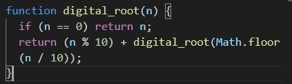
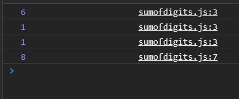

Sum of Digits / Digital Root
Instructions:
Digital root is the recursive sum of all the digits in a number. Given n,
take the sum of the digits of n. If that value has more than one digit,
continue reducing in this way until a single-digit number is produced. The
input will be a non-negative integer.
My Program:
Function:

Output of recursive (n%10)(final solution is 8):

Methodology:
-
Base case: if n is zero, return n
-
If n = 0 there is nothing left to calculate, because we are adding
digits (any number + 0 remains the same)
-
Recursively calculate
(n%10) + Math.floor(n/10) until n = 0; Below is a
walk-through of this methodology using n = 116 as an
example
- FIRST ITERATION
- n% 10 = 6
- + (plus)
- Math.floor(n / 10) = 11
-
Entire Statement:
return (6) + digital_root(Math.floor(11));
- SECOND ITERATION
- n = 11
- n is not equal to 0, so continue on
-
Perform
return (11 % 10) + digital_root(Math.floor(11 / 10));
-
Which is the same as saying
return (1) + digital_root(Math.floor(1));
- THIRD ITERATION
-
return (1 % 10) + digital_root(Math.floor(1 / 10));
-
Is the same as saying
return (1) + digital_root(Math.floor(0));
-
Note that the only part of the expression being sent back in to the
function recursively is digital_root(0), which means that the
function will return n, according to our base case.
-
Finally, the function returns 8, via the recursive addition of the
digits of 116